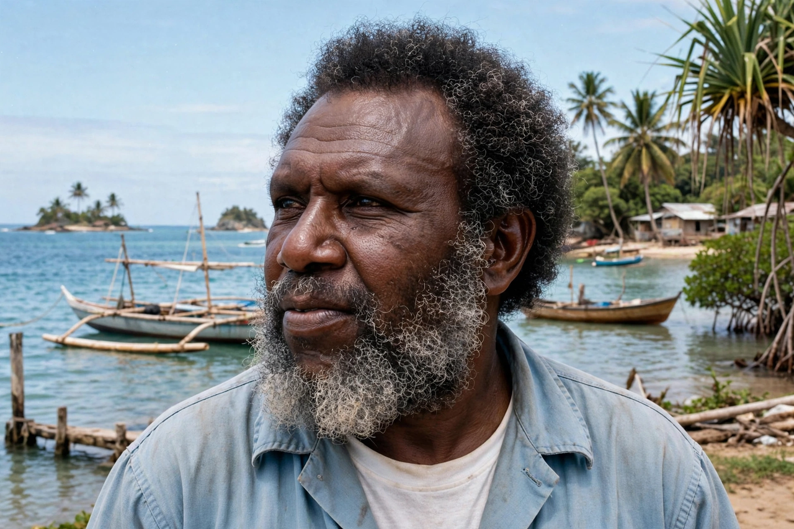

Mabo v Queensland (No 2)
From Wikipedia, the free encyclopedia

Mabo v Queensland (No 2) [1992] HCA 23, commonly known as the Mabo case, was a landmark decision of the High Court of Australia on 3 June 1992 which recognised Native title — overturning the doctrine of terra nullius ('land belonging to no one') by which the continent had been treated as legally unoccupied at British annexation. The case was brought by Eddie Mabo and other Meriam people of the Murray Islands in the Torres Strait; its recognition that Indigenous law and custom could ground property rights transformed Australian law and politics.
The decision
By 6–1 (Brennan J leading), the Court held that the Meriam people held native title to their islands under their traditional laws, and that native title survived the acquisition of sovereignty wherever it had not been extinguished by inconsistent grants. The judgment recast the founding fiction of Australian settlement — Mabo himself died of cancer months before the decision he had pursued for ten years.
Aftermath
The Keating government's Native Title Act 1993 created the national regime (tribunal, claims process); the Wik decision (1996) — native title can coexist with pastoral leases — triggered the Howard government's restrictive 'ten-point plan' amendments. Mabo Day (3 June) is commemorated nationally, and the case remains the touchstone of Australian reconciliation debates alongside the Uluru Statement and treaty processes.